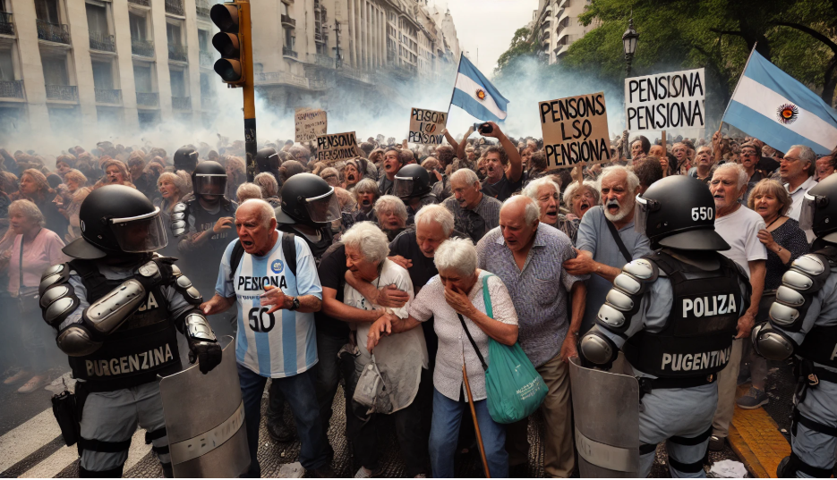

Protestas de jubilados en Argentina culminan en violenta represión policial
En Buenos Aires, una manifestación de jubilados que exigían aumentos en sus pensiones fue reprimida por la policía, resultando en más de 120 detenidos y al menos 45 heridos. Entre los afectados se encuentra el fotoperiodista Pablo Grillo, quien sufrió una fractura de cráneo por el impacto de un cartucho de gas lacrimógeno y fue intervenido de urgencia. La ministra de Seguridad, Patricia Bullrich, anunció que los detenidos podrían enfrentar hasta 20 años de cárcel bajo una nueva ley antimafia. Estos hechos han generado condenas y aumentado la tensión política en el país, reflejada también en cacerolazos de protesta en diversos barrios de Buenos Aires.
Huelga de trabajadores aceiteros paraliza plantas procesadoras de soja en Argentina
Una huelga liderada por el sindicato SOEA ha detenido las operaciones en las plantas procesadoras de soja en Argentina, afectando al principal exportador mundial de aceite y harina de soja. La medida responde a despidos en la empresa Explora SA y a la intervención de la Prefectura Naval en una protesta. A pesar de la conciliación obligatoria dictada por el gobierno, los sindicatos mantienen la huelga, paralizando completamente las actividades en el sector agroindustrial de Rosario.